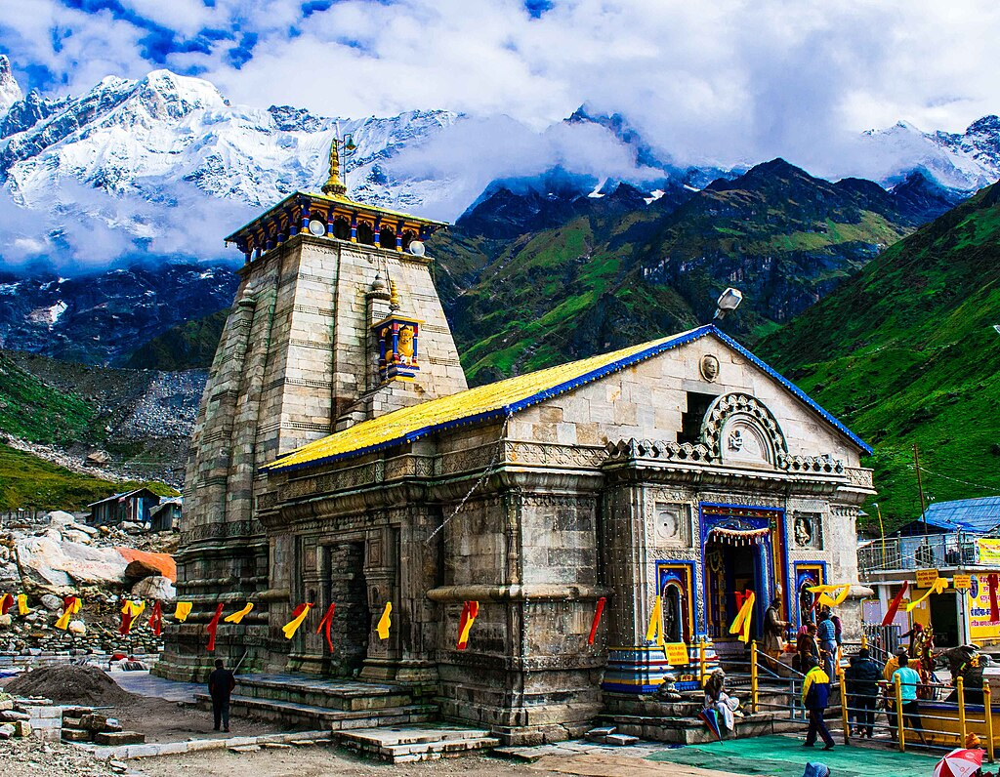

| Image | Temple Name | God / Goddess Name | Location | About Temple |
|---|---|---|---|---|

|
Tirumala Tirupati | Sri Venkateswara Swamy | Tirupati, Andhra Pradesh |
The Venkateswara Temple of Tirumala, also known as Sri Venkateswara Swami Temple, is located in the hills of Tirumala in Tirupati District, Andhra Pradesh. The temple is dedicated to Lord Venkateswara, an incarnation of Lord Vishnu, believed to have appeared to save humanity in Kali Yuga. The temple is famously known as Tirupati Balaji Temple and is managed by Tirumala Tirupati Devasthanams (TTD). |

|
Meenakshi Amman Temple | Goddess Meenakshi & Lord Sundareswarar | Madurai, Tamil Nadu |
The Meenakshi Amman Temple, situated on the banks of the river Vaigai in Madurai, Tamil Nadu, is one of the most iconic and ancient temples of India. The temple is dedicated to Goddess Meenakshi, an avatar of Goddess Parvati, and her consort Lord Sundareswarar, an avatar of Lord Shiva. The temple complex is renowned for its twelve magnificent gopurams (gateway towers) filled with thousands of colorful sculptured figures depicting Hindu gods, goddesses, and mythological beings. It is believed that the temple was originally built in the 6th century BC, with major reconstruction works carried out during the rule of the Nayak kings, particularly King Thirumalai Nayak in the 16th century. The temple is also famous for the celestial wedding festival known as "Meenakshi Thirukalyanam," which attracts millions of devotees from across the world every year. |
|

|
Kedarnath Temple | Lord Shiva | Rudraprayag District, Uttarakhand |
Kedarnath Temple is one of the holiest and most revered Hindu temples dedicated to Lord Shiva, located near the Mandakini River in the Himalayas of Uttarakhand at an altitude of 11,755 feet above sea level. It is one of the twelve Jyotirlingas and a major pilgrimage destination forming a vital part of the Chota Char Dham Yatra. The temple is believed to have been constructed by the Pandavas after the Kurukshetra war, seeking Lord Shiva’s forgiveness. The present structure is more than 1,200 years old and was believed to be built by Adi Shankaracharya in the 8th century AD from enormous stone slabs over a large rectangular platform. The temple remains accessible only for six months (April to November), as heavy snow covers the region during winter. During the devastating 2013 floods, although the surroundings were heavily damaged, the temple survived miraculously, which strengthened devotees’ spiritual faith in Lord Shiva. |